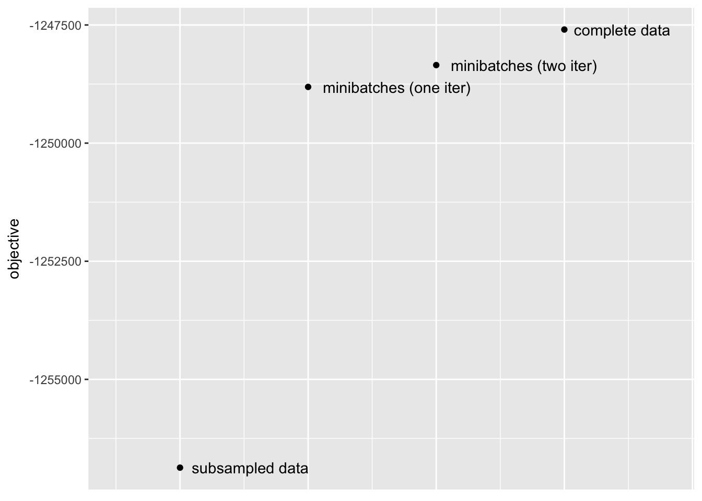
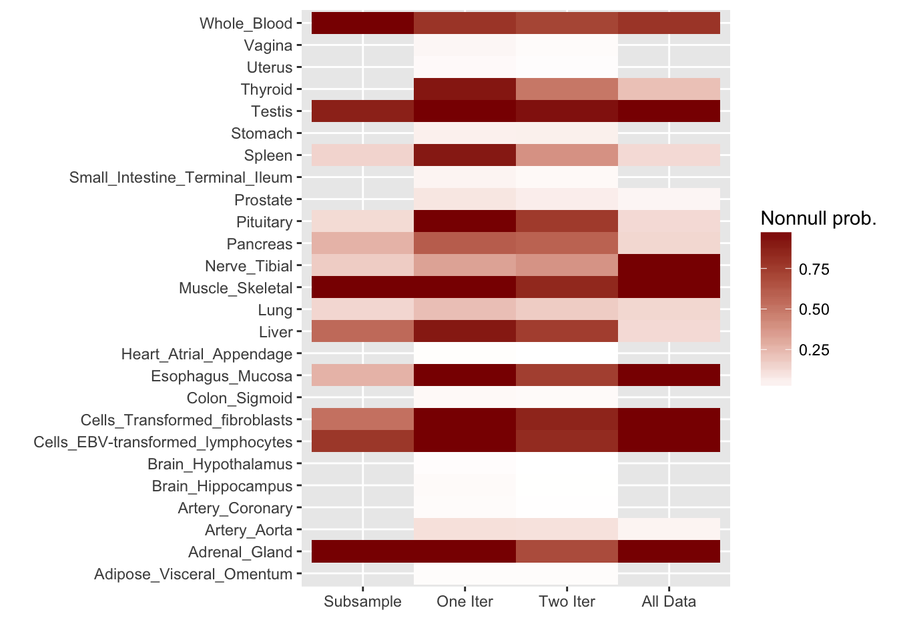

Last updated: 2018-10-02
workflowr checks: (Click a bullet for more information) ✔ R Markdown file: up-to-date
Great! Since the R Markdown file has been committed to the Git repository, you know the exact version of the code that produced these results.
✔ Environment: empty
Great job! The global environment was empty. Objects defined in the global environment can affect the analysis in your R Markdown file in unknown ways. For reproduciblity it’s best to always run the code in an empty environment.
✔ Seed:
set.seed(20180714)
The command set.seed(20180714) was run prior to running the code in the R Markdown file. Setting a seed ensures that any results that rely on randomness, e.g. subsampling or permutations, are reproducible.
✔ Session information: recorded
Great job! Recording the operating system, R version, and package versions is critical for reproducibility.
✔ Repository version: 47c28df
wflow_publish or wflow_git_commit). workflowr only checks the R Markdown file, but you know if there are other scripts or data files that it depends on. Below is the status of the Git repository when the results were generated:
Ignored files:
Ignored: .DS_Store
Ignored: .Rhistory
Ignored: .Rproj.user/
Ignored: docs/.DS_Store
Ignored: docs/figure/.DS_Store
Untracked files:
Untracked: data/greedy19.rds
| File | Version | Author | Date | Message |
|---|---|---|---|---|
| Rmd | 47c28df | Jason Willwerscheid | 2018-10-02 | wflow_publish(“analysis/minibatch.Rmd”) |
Here I implement the “minibatch” approach described in a previous note.
In my MASH v FLASH application, I am interested in obtaining fixed loadings and priors on factors that can be used to get posteriors for individual tests from the GTEx dataset.
Currently, I use a subset of 16069 “strong” tests to obtain loadings and a subset of 20000 “random” tests to obtain priors on factors. But I would like to use a stochastic approach to simultaneously fit loadings and priors on factors to all of the tests (or, at least, to a much larger subsample of the millions of available tests).
To investigate, I’ve taken the “strong” dataset as a proxy for the complete GTEx data. As mentioned, it includes summary statistics for 16069 tests over 44 tissues, so it is small enough to fit all at once. Fitting the complete data yields a baseline against which I can compare results obtained using a subsampling method and a stochastic approach.
The subsampling method is analogous to my current MASH v FLASH approach. Here, I subsample approximately 10% of the “strong” tests and fit a FLASH object to this smaller dataset.
Next, using the stochastic technique described in the note linked above, I extract two sets of loadings and priors on factors. I examine the loadings and priors obtained via a single pass through the complete data, as well as those obtained after two iterations over the complete data. (To mimic the situation where the complete data has been chunked into multiple files in advance, I do not re-randomize the minibatches in between iterations.) For details, see the note linked above.
I pre-run the code below and load the results from file.
control_fit <- readRDS("./data/minibatch/control_fit.rds")
subsample_fit <- readRDS("./data/minibatch/subsample_fit.rds")
oneiter_fit <- readRDS("./data/minibatch/oneiter_fit.rds")
twoiter_fit <- readRDS("./data/minibatch/twoiter_fit.rds")First, I compare the objectives attained after fitting the complete data to fixed loadings and priors on factors obtained using the methods described above. (The fitting is done in a post-processing step in the code below. Note that since scaling affects the likelihood when loadings are fixed, I have normalized all loadings to have \(\ell_2\) norm equal to 1.)
The stochastic approach yields a huge improvement over the subsampling approach. Interestingly, a single iteration largely suffices; there is certainly an improvement in objective (by approximately 500) after a second iteration, but most of the improvement over the subsampling approach occurs after the first iteration.
library(ggplot2)
library(reshape2)
devtools::load_all("~/GitHub/flashr")
#> Loading flashr
# Objective:
obj <- data.frame(objective = c(subsample_fit$objective,
oneiter_fit$objective,
twoiter_fit$objective,
control_fit$objective),
fit = c("subsampled data",
"minibatches (one iter)",
"minibatches (two iter)",
"complete data"))
ggplot(obj, aes(x = 1:4, y = objective)) + geom_point() +
geom_text(aes(label = fit, vjust = "center", hjust = -0.1)) +
xlim(c(0.5, 4.8)) +
theme(axis.title.x=element_blank(),
axis.text.x=element_blank(),
axis.ticks.x=element_blank())
For ease of comparison, I have split loadings into “unique” effects (which I have defined as a loading in which one element has absolute value greater than 0.9) and “shared” effects. Below, I display a heatmap of the unique effects obtained using each method. The intensity reflects the mixture density of the null component in the prior on the corresponding factor. Darker colors indicate unique effects that are common in this dataset; lighter colors indicate rarer effects; and the absence of a tile indicates that no factor was found.
Observe that the stochastic approach finds many more rare effects than other methods. Intuitively, it is easier to find a rare effect when it is present in a smaller dataset. I think that this might be an advantage of the stochastic approach, even if it results in a lower objective; after all, I add unique effects as “canonical” in MASH v FLASH. In effect, if FLASH were able to pick up all of the unique effects, then it would no longer be necessary to add them as canonical.
A second observation is that a second stochastic iteration generally results in rarer unique effects. Sometimes this accords with the results on the complete data; sometimes it doesn’t. I don’t yet understand why this happens.
# Unique effects:
find_unique_effects <- function(fit) {
LL <- fit$ldf$l
idx <- which(colSums(abs(LL) > 0.9) == 1)
fx <- apply(abs(LL[, idx]), 2, which.max)
gf <- fit$fit$gf
gf <- gf[idx]
w <- sapply(gf, function(x) 1 - x$pi[1])
return(list(idx = idx, fx = fx, w = w))
}
unique_effects <- matrix(0, nrow = 44, ncol = 4)
rownames(unique_effects) <- rownames(control_fit$ldf$l)
colnames(unique_effects) <- c("subsample", "one.iter",
"two.iter", "all.data")
fx1 <- find_unique_effects(subsample_fit)
unique_effects[fx1$fx, 1] <- fx1$w
fx2 <- find_unique_effects(oneiter_fit)
unique_effects[fx2$fx, 2] <- fx2$w
fx3 <- find_unique_effects(twoiter_fit)
unique_effects[fx3$fx, 3] <- fx3$w
fx4 <- find_unique_effects(control_fit)
unique_effects[fx4$fx, 4] <- fx4$w
unique_effects <- melt(unique_effects)
levels(unique_effects$Var2) <- c("Subsample", "One Iter",
"Two Iter", "All Data")
unique_effects <- unique_effects[unique_effects$value > 0, ]
ggplot(unique_effects, aes(Var2, Var1)) + geom_tile(aes(fill = value)) +
scale_fill_gradient(low = "white", high = "darkred") +
xlab("") + ylab("") + labs(fill = "Nonnull prob.")
Click “Code” to view the code used to obtain the above results.
devtools::load_all("~/GitHub/flashr/")
devtools::load_all("~/GitHub/ebnm/")
# Load data:
gtex <- readRDS(gzcon(url("https://github.com/stephenslab/gtexresults/blob/master/data/MatrixEQTLSumStats.Portable.Z.rds?raw=TRUE")))
strong <- t(gtex$strong.z)
# Set global flash fit parameters:
ebnm_fn <- "ebnm_ash"
ebnm_param <- list(l = list(), f = list())
tol <- 0.1
# Fit the dataset in the usual way:
control_fl <- flash(strong,
var_type = "constant",
ebnm_fn = ebnm_fn,
ebnm_param = ebnm_param,
backfit = TRUE,
tol = tol)
# Set a seed and split the dataset into 10 minibatches:
set.seed(666)
p <- ncol(strong)
idx <- sample(1:p)
nbatch <- 10
batchsize <- ceiling(p / nbatch)
batch_idx <- list()
for (i in 1:(nbatch - 1)) {
batch_idx[[i]] <- idx[((i - 1) * batchsize + 1):(i * batchsize)]
}
batch_idx[[nbatch]] <- idx[((nbatch - 1) * batchsize + 1):p]
# Fit an initial flash object on the first minibatch:
fl_data <- strong[, batch_idx[[1]]]
fl <- flash(fl_data,
var_type = "constant",
ebnm_fn = ebnm_fn,
ebnm_param = ebnm_param,
backfit = TRUE,
nullcheck = TRUE,
tol = tol)
# Save these results as an example of a fit using only subsampled data:
subsample_fl <- fl
# Extract normalized loadings and rescaled priors on factors:
LL <- fl$fit$EL
LL_norms <- sqrt(colSums(LL^2))
LL <- scale(LL, scale = LL_norms, center = FALSE)
gf_sds <- mapply(function(x, y) x$sd * y, fl$fit$gf, as.list(LL_norms))
fixgrid_param = list(l = list(),
f = lapply(gf_sds, function(x) {
list(mixsd = x, pi_thresh = -1)
}))
# Iterate over the minibatches:
for (i in 2:nbatch) {
message("MINIBATCH ", i)
# Fit the minibatch to the loadings we have so far:
fl_data <- flash_set_data(strong[, batch_idx[[i]]])
old_fl <- flash_add_fixed_loadings(fl_data,
LL,
var_type = "constant",
ebnm_fn = ebnm_fn,
ebnm_param = fixgrid_param,
backfit = TRUE,
nullcheck = FALSE,
tol = tol)
# Look for new loadings in the current minibatch:
new_fl <- flash_add_greedy(fl_data,
f_init = old_fl,
var_type = "constant",
ebnm_fn = ebnm_fn,
ebnm_param = ebnm_param,
nullcheck = FALSE,
tol = tol)
# Unfix all loadings:
new_fl$fit$fixl[new_fl$fit$fixl] = FALSE
# Fix the grid for old factors...
fixgrid_param = list(l = list(),
f = lapply(old_fl$fit$gf, function(g) {
list(mixsd = g$sd, pi_thresh = -1)
}))
# ...but allow the grid for new factors to change...
if (ncol(new_fl$fit$EL) > ncol(LL)) {
for (k in (ncol(LL) + 1):ncol(new_fl$fit$EL)) {
fixgrid_param$f[[k]] <- list()
}
}
# ...and backfit the flash object to update loadings values:
new_fl <- flash_backfit(fl_data,
new_fl,
var_type = "constant",
ebnm_fn = ebnm_fn,
ebnm_param = fixgrid_param,
nullcheck = FALSE,
tol = tol)
# Do a nullcheck here:
nullcheck_res <- perform_nullcheck(fl_data,
new_fl$fit,
kset = 1:ncol(new_fl$fit$EL),
var_type = "constant",
verbose = TRUE)
# Normalize loadings, fix, and refit (we can't normalize directly
# because the grid is fixed)...
new_LL <- nullcheck_res$f$EL
LL_norms <- sqrt(colSums(new_LL^2))
new_LL <- scale(new_LL, scale = LL_norms, center = FALSE)
# ...removing any newly added loadings that have been zeroed out...
to_remove <- nullcheck_res$zeroed_out[nullcheck_res$zeroed_out > ncol(LL)]
if (length(to_remove) > 0) {
new_LL <- new_LL[, -to_remove]
fixgrid_param$f <- fixgrid_param$f[-to_remove]
}
# ...and setting any old loadings that have been zeroed out to zero:
new_LL[is.nan(new_LL)] <- 0
new_fl <- flash_add_fixed_loadings(fl_data,
new_LL,
var_type = "constant",
ebnm_fn = ebnm_fn,
ebnm_param = fixgrid_param,
backfit = TRUE,
nullcheck = FALSE,
tol = tol)
# Take weighted average of old and new loadings:
new_LL[, 1:ncol(LL)] <- ((i - 1) / i) * LL + (1 / i) * new_LL[, 1:ncol(LL)]
LL <- scale(new_LL, scale = sqrt(colSums(new_LL^2)), center = FALSE)
# Take weighted average of old and new priors:
new_gf <- new_fl$fit$gf
for (k in 1:length(old_fl$fit$gf)) {
old_pi <- old_fl$fit$gf[[k]]$pi
new_pi <- new_gf[[k]]$pi
# Deal with zeroed-out factors separately:
if (k %in% nullcheck_res$zeroed_out) {
new_gf[[k]] <- old_fl$fit$gf[[k]] # copy grid, class, etc. over
new_pi <- c(1, rep(0, length(old_pi) - 1))
}
new_gf[[k]]$pi <- ((i - 1) / i) * old_pi + (1 / i) * new_pi
}
# For newly added factors, take weighted average of new prior and zero:
if (length(new_gf) > length(old_fl$fit$gf)) {
for (k in (length(old_fl$fit$gf) + 1):length(new_gf)) {
new_pi <- new_gf[[k]]$pi
if (length(new_pi) > 1) {
new_pi[1] <- (i - 1) / i + (1 / i) * new_pi[1]
new_pi[2:length(new_pi)] <- (1 / i) * new_pi[2:length(new_pi)]
}
new_gf[[k]]$pi <- new_pi
}
}
fixgrid_param <- list(l = list(),
f = lapply(new_gf, function(x) {
list(mixsd = x$sd, pi_thresh = -1)
}))
}
# Save results:
oneiter_LL <- LL
oneiter_gf <- new_gf
# A second iteration over the same minibatches:
for (i in 1:nbatch) {
message("MINIBATCH ", i)
old_gf <- new_gf
# Fit the minibatch to the loadings without fixing:
fl_data <- flash_set_data(strong[, batch_idx[[i]]])
new_fl <- flash_add_fixed_loadings(fl_data,
LL,
fixl = FALSE,
var_type = "constant",
ebnm_fn = ebnm_fn,
ebnm_param = fixgrid_param,
backfit = TRUE,
nullcheck = FALSE,
tol = tol)
# Do nullcheck here:
nullcheck_res <- perform_nullcheck(fl_data,
new_fl$fit,
kset = 1:ncol(new_fl$fit$EL),
var_type = "constant",
verbose = TRUE)
# Normalize loadings, fix, and refit:
new_LL <- nullcheck_res$f$EL
LL_norms <- sqrt(colSums(new_LL^2))
new_LL <- scale(new_LL, scale = LL_norms, center = FALSE)
new_LL[is.na(new_LL)] <- 0
new_fl <- flash_add_fixed_loadings(fl_data,
new_LL,
fixl = TRUE,
var_type = "constant",
ebnm_fn = ebnm_fn,
ebnm_param = fixgrid_param,
backfit = TRUE,
nullcheck = FALSE,
tol = tol)
# Take weighted average of old and new loadings:
new_LL <- ((nbatch - 1) / nbatch) * LL + (1 / nbatch) * new_LL
LL <- scale(new_LL, scale = sqrt(colSums(new_LL^2)), center = FALSE)
# Take weighted average of old and new priors:
new_gf <- new_fl$fit$gf
for (k in 1:length(old_gf)) {
# Deal with zeroed-out factors separately:
if (k %in% nullcheck_res$zeroed_out) {
new_gf[[k]] <- old_gf[[k]] # copy grid, etc.
new_gf[[k]]$pi <- c(1, rep(0, length(old_gf[[k]]$pi) - 1))
}
new_gf[[k]]$pi <- ((nbatch - 1) / nbatch) * old_gf[[k]]$pi +
(1 / nbatch) * new_gf[[k]]$pi
}
}
# Save results
twoiter_LL <- LL
twoiter_gf <- new_gf
# Do some postprocessing and save the results to file.
# "Control" is best case (fit all data at once):
control_LL <- control_fl$fit$EL
control_norms <- sqrt(colSums(control_LL^2))
control_LL <- scale(control_LL, scale = control_norms, center = FALSE)
control_gf <- control_fl$fit$gf
for (i in 1:length(control_gf)) {
control_gf[[i]]$sd <- control_gf[[i]]$sd * control_norms[i]
}
control_ebnm_param <- list(l = list(),
f = lapply(control_gf, function(g) {
list(g = g, fixg = TRUE)
}))
control_fit <- flash_add_fixed_loadings(strong,
LL = control_LL,
var_type = "constant",
ebnm_fn = ebnm_fn,
ebnm_param = control_ebnm_param,
backfit = TRUE,
tol = tol)
saveRDS(control_fit, "./data/minibatch/control_fit.rds")
# "Subsample" is worst case (only use first minibatch):
subsample_LL <- subsample_fl$fit$EL
subsample_norms <- sqrt(colSums(subsample_LL^2))
subsample_LL <- scale(subsample_LL, scale = subsample_norms, center = FALSE)
subsample_gf <- subsample_fl$fit$gf
for (i in 1:length(subsample_gf)) {
subsample_gf[[i]]$sd <- subsample_gf[[i]]$sd * subsample_norms[i]
}
subsample_ebnm_param <- list(l = list(),
f = lapply(subsample_gf, function(g) {
list(g = g, fixg = TRUE)
}))
subsample_fit <- flash_add_fixed_loadings(strong,
LL = subsample_LL,
var_type = "constant",
ebnm_fn = ebnm_fn,
ebnm_param = subsample_ebnm_param,
backfit = TRUE,
tol = tol)
saveRDS(subsample_fit, "./data/minibatch/subsample_fit.rds")
oneiter_ebnm_param <- list(l = list(),
f = lapply(oneiter_gf, function(g) {
list(g = g, fixg = TRUE)
}))
oneiter_fit <- flash_add_fixed_loadings(strong,
LL = oneiter_LL,
var_type = "constant",
ebnm_fn = ebnm_fn,
ebnm_param = oneiter_ebnm_param,
backfit = TRUE,
tol = tol)
saveRDS(oneiter_fit, "./data/minibatch/oneiter_fit.rds")
twoiter_ebnm_param <- list(l = list(),
f = lapply(twoiter_gf, function(g) {
list(g = g, fixg = TRUE)
}))
twoiter_fit <- flash_add_fixed_loadings(strong,
LL = twoiter_LL,
var_type = "constant",
ebnm_fn = ebnm_fn,
ebnm_param = twoiter_ebnm_param,
backfit = TRUE,
tol = tol)
saveRDS(twoiter_fit, "./data/minibatch/twoiter_fit.rds")sessionInfo()
#> R version 3.4.3 (2017-11-30)
#> Platform: x86_64-apple-darwin15.6.0 (64-bit)
#> Running under: macOS High Sierra 10.13.6
#>
#> Matrix products: default
#> BLAS: /Library/Frameworks/R.framework/Versions/3.4/Resources/lib/libRblas.0.dylib
#> LAPACK: /Library/Frameworks/R.framework/Versions/3.4/Resources/lib/libRlapack.dylib
#>
#> locale:
#> [1] en_US.UTF-8/en_US.UTF-8/en_US.UTF-8/C/en_US.UTF-8/en_US.UTF-8
#>
#> attached base packages:
#> [1] stats graphics grDevices utils datasets methods base
#>
#> other attached packages:
#> [1] flashr_0.6-3 reshape2_1.4.3 ggplot2_2.2.1
#>
#> loaded via a namespace (and not attached):
#> [1] Rcpp_0.12.18 compiler_3.4.3 pillar_1.2.1
#> [4] git2r_0.21.0 plyr_1.8.4 workflowr_1.0.1
#> [7] iterators_1.0.9 R.methodsS3_1.7.1 R.utils_2.6.0
#> [10] tools_3.4.3 testthat_2.0.0 digest_0.6.15
#> [13] lattice_0.20-35 evaluate_0.10.1 memoise_1.1.0
#> [16] tibble_1.4.2 gtable_0.2.0 rlang_0.2.0
#> [19] foreach_1.4.4 Matrix_1.2-12 commonmark_1.4
#> [22] parallel_3.4.3 yaml_2.1.17 withr_2.1.1.9000
#> [25] stringr_1.3.0 knitr_1.20 roxygen2_6.0.1.9000
#> [28] xml2_1.2.0 devtools_1.13.4 rprojroot_1.3-2
#> [31] grid_3.4.3 R6_2.2.2 rmarkdown_1.8
#> [34] ashr_2.2-13 magrittr_1.5 whisker_0.3-2
#> [37] MASS_7.3-48 codetools_0.2-15 backports_1.1.2
#> [40] scales_0.5.0 htmltools_0.3.6 softImpute_1.4
#> [43] colorspace_1.3-2 labeling_0.3 stringi_1.1.6
#> [46] pscl_1.5.2 doParallel_1.0.11 lazyeval_0.2.1
#> [49] munsell_0.4.3 truncnorm_1.0-8 SQUAREM_2017.10-1
#> [52] R.oo_1.21.0This reproducible R Markdown analysis was created with workflowr 1.0.1